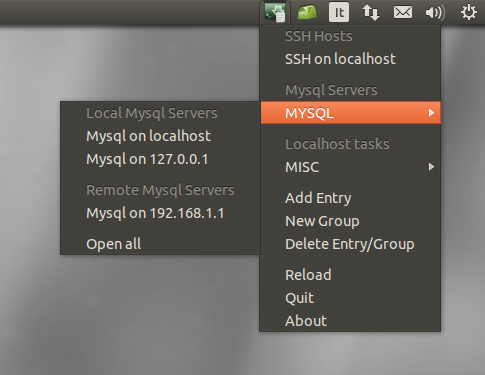
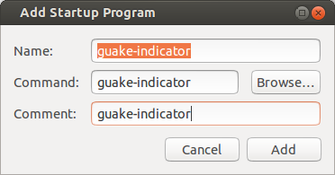

What is guake-indicator?
Guake-indicator is a C software application designed for Ubuntu 13.10 and 14.04 with Unity that lets you manage your favorite ssh hosts establishing a new ssh connection with Guake. Guake is a top-down terminal written in Python by Max Ulidtko,Pierre-Yves Chibon, Aleksandar Krsteski, Lincoln de Sousa, Gabriel Falcão.
Guake-indicator sticks to your "Ubuntu System Tray" and displays your favorites ssh hosts retrieved from ~/.guake.indicator/guake-indicator.json. If guake-indicator.json does not exist, guake-indicator will create a default one with a single "localhost" entry. The default configuration file looks like this:You can customize this file according to your needs with your favorite text editor, and just use this sample as a base to add new entries. The fields are self-explanatory, however, I'm going to give you a more in-depth description of each one:
Lately I got a lot of request about introducing support for various ssh options. I am fully aware that the ssh options currently supported by guake-indicator are just a few but supporting all of them would make guake-indicator too messy and heavy. I have a solution for that and you'll see it in the next release, in the meantime there's a workaround: don't use the hostname and login fields, leave them blanks, in this way only 'command after login' is executed. Put your ssh customized command in the command after login field or whatever command you like and guake-indicator won't be just a ssh connection manager anymore but a fully customizable guake command manager. For example here's how i use guake-indicator for launching Dota2 through Steam:
- hostname : the host to connect (it can be his IP address or his DNS), leave it blank to execute commands directly on localhost
- login : the ssh user
- menu_name : the name that will show up in the indicator itself
- tab_name : the name of the guake terminal tab once it is opened
- command_after_login : command to issue after the ssh login is successfully performed - this field is optional
- remote_command : if set to yes, after that "command_after_login" is executed, the bash shell won't be invoked so an automatic exit is performed.
- x_forwarded : if set to yes it adds the -X flag.This tells SSH to forward the X server calls to the client computer (available from version 0.2).
- dont_show_guake : if set to yes guake is not shown after the command execution
{ "hostname":"", "login":"", "menu_name":"Dota2", "tab_name":"Dota2", "command_after_login":"steam steam:\/\/rungameid\/570", "remote_command":"no", "x_forwarded":"no", "dont_show_guake":"yes" }We're looking for beta tester and contributors in general for the next release, if you want to be part of this email/facebook/g+/skype me.
Screenshot

Launching at startup
You can launch guake and guake-indicator at startup using ubuntu "startup application", and you can find "startup application" under your unity dashboard, then fill in the form according to the following screenshot:
License Information
guake-indicator is free software; you can redistribute it and/or
modify it under the terms of the GNU General Public License
as published by the Free Software Foundation; either version 2
of the License, or (at your option) any later version.
This program is distributed in the hope that it will be useful,
but WITHOUT ANY WARRANTY; without even the implied warranty of
MERCHANTABILITY or FITNESS FOR A PARTICULAR PURPOSE. See the
GNU General Public License for more details.
You should have received a copy of the GNU General Public
License
along with this program; if not, write to the Free Software
Foundation, Inc., 51 Franklin Street, Fifth Floor, Boston, MA
02110-1301, USA.
Obtaining guake-indicator
Sources to guake-indicator may be obtained from http://guake-indicator.ozzyboshi.com/sources/
Guake-indicator Ubuntu packages may be obtained from https://launchpad.net/guake-indicator
If you want to keep-up with the latest release please consider adding my PPA. To install guake-indicator from my ppa, type in your terminal :
sudo add-apt-repository ppa:gun101/ppa sudo apt-get update sudo apt-get install guake-indicatorInformation regarding guake-indicator may be obtained from the guake-indicator website: http://guake-indicator.ozzyboshi.com/
Requirements for guake-indicator
For proper compilation and functionality of guake-indicator, the following packages are REQUIRED:
- libappindicator-dev
- libcairo2-dev (>= 1.10)
- libdbus-1-dev
- libdbus-glib-1-dev
- libglib2.0-dev (>=2.35.4)
- libgtk-3-dev (>=3.1.4)
- libjson-c-dev
Guake version < 0.4.5 on Ubuntu 13.10 and 14.04 show screen issue
Each time a guake-indicator entry is clicked, Guake shows up. This is accomplished by a dbus call to the "Guake show interface". Unfortunately this interface is only present on Guake 0.4.5, in previous versions there's only a "Guake show-hide interface". The show-hide interface causes guake-indicator to hide Guake if it's already open, therefore, on old Guake versions, Guake hides himself if you click on a guake-indicator entry while Guake terminal is shown on the screen. You can upgrade Guake to 0.4.5 from https://launchpad.net/~ulidtko/+archive/guake/+packages. Currently (April 2014) the latest official Ubuntu Package is updated at version 0.4.4 even in the Trusty Thar repositories.
Guake version >= 0.4.3-3 on Ubuntu 13.10 autorenaming issue
I noticed that Ubuntu 13.10 ships with a guake that auto-renames each tab every time a change dir command is issued. In this way the 'tab_name' field within guake-indicator.json is completely useless because guake overrides this value. In order to solve this:
- install gconf-editor package to edit Guake options ( sudo apt-get install gconf-editor ).
- Execute gconf-editor from a terminal
- Browse to /apps/guake/general and unmark use_vte_titles key
- restart Guake
Reporting Bugs
Bugs may be reported to the author by submitting a bug report to gun101@email.it or using the launchpad bug tracking system
Reviews on the web
- http://www.lffl.org/2014/06/guake-indicator-ssh-ubuntu.html
- http://www.webupd8.org/2014/06/easily-manage-connect-to-ssh-hosts-with.html
- http://linuxg.net/how-to-install-guake-terminal-and-guake-indicator-on-ubuntu-14-04-trusty-tahr-and-ubuntu-13-10-saucy-salamander/
- http://www.tuxjournal.net/ubuntu-connessioni-ssh-portata-di-clic/
Todo list (suggestions from the blog comments)
- Support for mosh (http://mosh.mit.edu/)
- Customizable ssh port
- Support from -D, -L, or -R flags
- Switch to a xml based configuration file
Debian and downstreams
From July 15 2014 guake-indicator is part of Debian Sid and thus of the Debian project.Thanks to Sylvestre Ledru for sponsoring the project and to Thorsten Alteholz for reviewing it.
Link to Sid (Debian unstable) package
Link to Ubuntu 14.10 (Utopic Unicorn) package